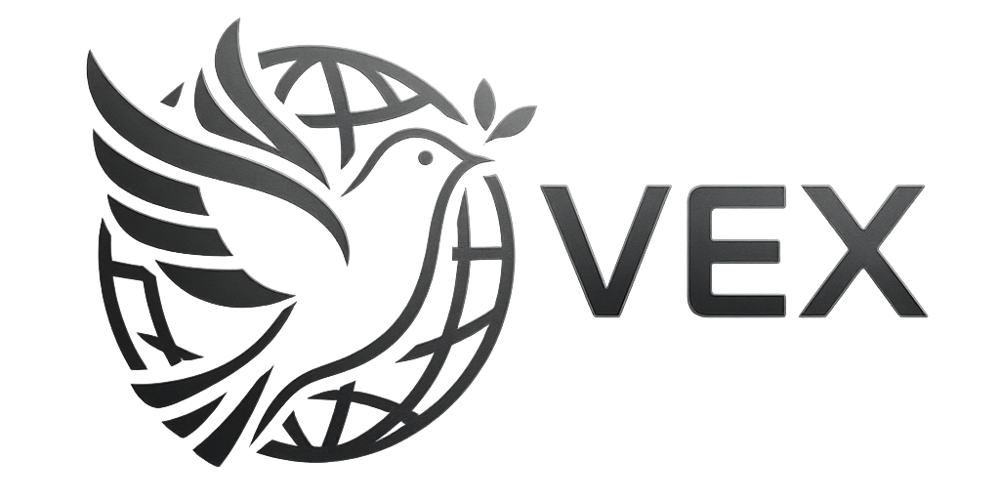

<div class="container">
    <head>
        <dev class="uidesign">
            <link rel="stylesheet" href="css/index.css">
            <meta charset="UTF-8">
            <meta name="viewport" content="width=device-width, initial-scale=1.0">
            <title>VEX - ITによる世界平和の実現</title>
    </head>
    <body>
        <header>
            <!--アイコンと遷移するためのタブを作成する-->
            <div class="header-inner">
                <h1 class="logo">
                    <a href="index.html">
                        
                    </a>
                </h1>
                <nav>
                    <ul>
                        <li><a href="company.html">会社案内</a></li>
                        <li><a href="recruit.html">採用情報</a></li>
                    </ul>
                </nav>
            </div>
        </header>
        <section class="section-block philosophy-area">
            <h2>理念</h2>
            <p>ここに会社の理念やビジョンが入ります。</p>
        </section>
        <section class="section-block top-message-area">
            <h2>TOPメッセージ</h2>
            <p>代表取締役からのメッセージを記載します。</p>
        </section>
        <section class="section-block history-area">
            <h2>企業沿革</h2>
            <p>会社の設立からの歴史を年表形式などで記載します。</p>
        </section>
    </body>
    <footer>
        <h2>企業SNS</h2>
        <div class="sns-icons">
            <a href="" class="sns-item">
                
            </a>
            <a href="" class="sns-item">
                
            </a>
            <a href="" class="sns-item">
                
            </a>
            <a href="" class="sns-item">
                
            </a>
        </div>
    </footer>
</div>